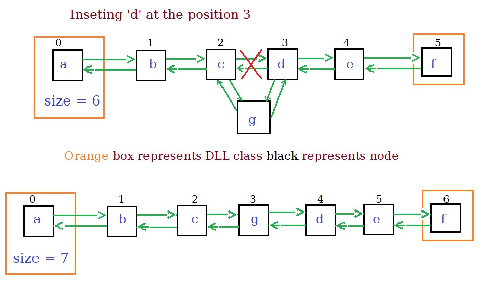
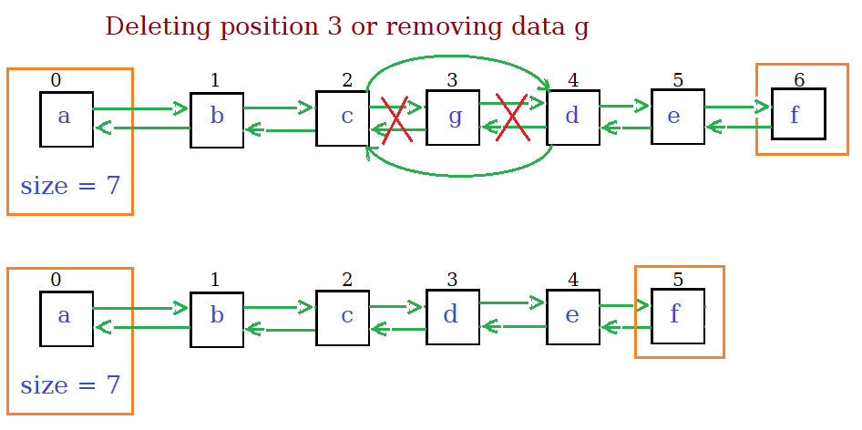

- It is a linear data structure made from chain of node objects.
- Each node has three attributes data, pointer to the next node, pointer to previous node.
- The doubly linked list class has two nodes head, tail of the list and size of the list.
Important Functions
-
insertFirst(data)
Inserts the data at the head of list.
- Make node with Data and the next pointer pointing to the head of the list.
- make the previous pointer of head as the new node.
- Set the head of the list as the new node created.
- Increment the size.
-
insertLast(data)
Inserts the data at the tail of list.
- Make node with data and set the previous pointer to the tail of the list.
- Make the next pointer of tail as the new node.
- Set the tail of the list as the new node created.
- Increment the size.
-
Find(Data)
Returns the position of node containing the Data if exists else returns -1
- We traverse from the head linearly using the next pointer.
- If the a node containing the Data is encountered then return the index.
- If null is reached then return -1.
-
remove(data)
Deletes the node containing the Data.
- Find the node containing data by linear search.
- Set the next pointer of previous node to the node next to the data node.
- Set the previous pointer of the next node to the previous of data node
- Decrement the size.
-
Insert(poisiton, data)
Inserts the a new node containing the data at given poisiton.
- Throw error if index is out of bound.
- Create a new node containing data.
- If the position is less than half of size, start from the head reach the node before position.
Else start from the tail travel backwards.
- Change the next and previous pointers to the new node at the position.
- Increment the size.

-
Delete(position)
Delete the node at given position.
- Throw error if index is out of bound.
- Travel to the node just before the position node from the head or tail according to the vicinity.
- Change the pointers of node after and before the node at poisiton.
- Decrement the size.

Code